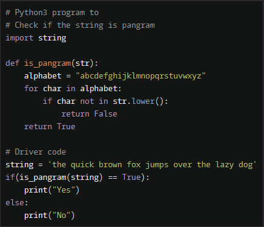
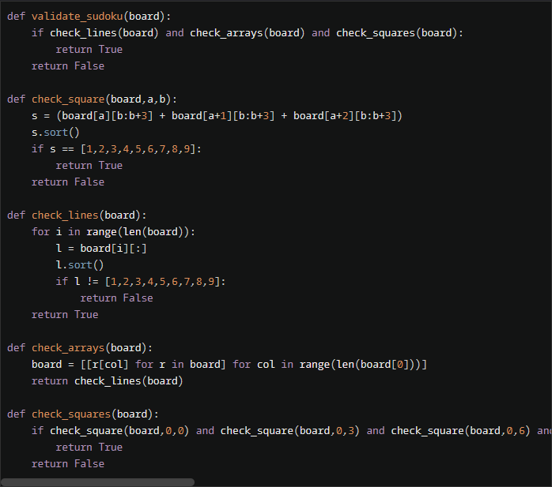

实验五 Python数据结构与数据模型
班级： 21计科04
学号： B20210302431
姓名： 许顶阳
Github地址：https://gitee.com/xdyyyyyy/python_course
CodeWars地址：https://www.codewars.com/users/xdyyyy
实验目的
- 学习Python数据结构的高级用法
- 学习Python的数据模型
实验环境
- Git
- Python 3.10
- VSCode
- VSCode插件
实验内容和步骤
第一部分
在Codewars网站注册账号，完成下列Kata挑战：
第一题：停止逆转我的单词
难度： 6kyu
编写一个函数，接收一个或多个单词的字符串，并返回相同的字符串，但所有5个或更多的字母单词都是相反的（就像这个Kata的名字一样）。传入的字符串将只由字母和空格组成。只有当出现一个以上的单词时，才会包括空格。
例如：
spinWords( "Hey fellow warriors" ) => returns "Hey wollef sroirraw"
spinWords( "This is a test") => returns "This is a test"
spinWords( "This is another test" )=> returns "This is rehtona test"
代码提交地址：
https://www.codewars.com/kata/5264d2b162488dc400000001
提示：
- 利用str的split方法可以将字符串分为单词列表
例如：
words = "hey fellow warrior".split()
# words should be ['hey', 'fellow', 'warrior']
- 利用列表推导将长度大于等于5的单词反转(利用切片word[::-1])
- 最后使用str的join方法连结列表中的单词。
第二题： 发现离群的数(Find The Parity Outlier)
难度：6kyu
给你一个包含整数的数组（其长度至少为3，但可能非常大）。该数组要么完全由奇数组成，要么完全由偶数组成，除了一个整数N。请写一个方法，以该数组为参数，返回这个 "离群 "的N。
例如：
[2, 4, 0, 100, 4, 11, 2602, 36]
# Should return: 11 (the only odd number)
[160, 3, 1719, 19, 11, 13, -21]
# Should return: 160 (the only even number)
代码提交地址：
https://www.codewars.com/kata/5526fc09a1bbd946250002dc
第三题： 检测Pangram
难度：6kyu
pangram是一个至少包含每个字母一次的句子。例如，"The quick brown fox jumps over the lazy dog "这个句子就是一个pangram，因为它至少使用了一次字母A-Z（大小写不相关）。
给定一个字符串，检测它是否是一个pangram。如果是则返回True，如果不是则返回False。忽略数字和标点符号。
代码提交地址：
https://www.codewars.com/kata/545cedaa9943f7fe7b000048
第四题： 数独解决方案验证
难度：6kyu
数独背景
数独是一种在 9x9 网格上进行的游戏。游戏的目标是用 1 到 9 的数字填充网格的所有单元格，以便每一列、每一行和九个 3x3 子网格（也称为块）中的都包含数字 1 到 9。更多信息请访问：http://en.wikipedia.org/wiki/Sudoku
编写一个函数接受一个代表数独板的二维数组，如果它是一个有效的解决方案则返回 true，否则返回 false。数独板的单元格也可能包含 0，这将代表空单元格。包含一个或多个零的棋盘被认为是无效的解决方案。棋盘总是 9 x 9 格，每个格只包含 0 到 9 之间的整数。
代码提交地址：
https://www.codewars.com/kata/63d1bac72de941033dbf87ae
第五题： 疯狂的彩色三角形
难度： 2kyu
一个彩色的三角形是由一排颜色组成的，每一排都是红色、绿色或蓝色。连续的几行，每一行都比上一行少一种颜色，是通过考虑前一行中的两个相接触的颜色而产生的。如果这些颜色是相同的，那么新的一行就使用相同的颜色。如果它们不同，则在新的一行中使用缺失的颜色。这个过程一直持续到最后一行，只有一种颜色被生成。
例如：
Colour here: G G B G R G B R
Becomes colour here: G R B G
一个更大的三角形例子：
R R G B R G B B
R B R G B R B
G G B R G G
G R G B G
B B R R
B G R
R B
G
你将得到三角形的第一行字符串，你的工作是返回最后的颜色，这将出现在最下面一行的字符串。在上面的例子中，你将得到 "RRGBRGBB"，你应该返回 "G"。
限制条件： 1 <= length(row) <= 10 ** 5
输入的字符串将只包含大写字母'B'、'G'或'R'。
例如：
triangle('B') == 'B'
triangle('GB') == 'R'
triangle('RRR') == 'R'
triangle('RGBG') == 'B'
triangle('RBRGBRB') == 'G'
triangle('RBRGBRBGGRRRBGBBBGG') == 'G'
代码提交地址：
https://www.codewars.com/kata/5a331ea7ee1aae8f24000175
提示：请参考下面的链接，利用三进制的特点来进行计算。
https://stackoverflow.com/questions/53585022/three-colors-triangles
第二部分
使用Mermaid绘制程序流程图
安装VSCode插件：
- Markdown Preview Mermaid Support
- Mermaid Markdown Syntax Highlighting
使用Markdown语法绘制你的程序绘制程序流程图（至少一个），Markdown代码如下：

显示效果如下：
查看Mermaid流程图语法-->点击这里
使用Markdown编辑器（例如VScode）编写本次实验的实验报告，包括实验过程与结果、实验考查和实验总结，并将其导出为 PDF格式 来提交。
实验过程与结果
请将实验过程与结果放在这里，包括：
第一题：停止逆转我的单词
python代码：

显示效果如下:
def spin_words(sentence):
# Your code goes here
sentence = sentence.split(" ")
return " ".join([i[::-1] if len(i) >= 5 else i for i in sentence])
第二题： 发现离群的数(Find The Parity Outlier)
python代码：

显示效果如下：
def find_outlier(int):
odds = [x for x in int if x%2!=0]
evens= [x for x in int if x%2==0]
return odds[0] if len(odds)<len(evens) else evens[0]
第三题： 检测Pangram
python代码：

显示效果如下：
# Python3 program to
# Check if the string is pangram
import string
def is_pangram(str):
alphabet = "abcdefghijklmnopqrstuvwxyz"
for char in alphabet:
if char not in str.lower():
return False
return True
# Driver code
string = 'the quick brown fox jumps over the lazy dog'
if(is_pangram(string) == True):
print("Yes")
else:
print("No")
第四题： 数独解决方案验证
python代码：

显示效果如下：
def validate_sudoku(board):
if check_lines(board) and check_arrays(board) and check_squares(board):
return True
return False
def check_square(board,a,b):
s = (board[a][b:b+3] + board[a+1][b:b+3] + board[a+2][b:b+3])
s.sort()
if s == [1,2,3,4,5,6,7,8,9]:
return True
return False
def check_lines(board):
for i in range(len(board)):
l = board[i][:]
l.sort()
if l != [1,2,3,4,5,6,7,8,9]:
return False
return True
def check_arrays(board):
board = [[r[col] for r in board] for col in range(len(board[0]))]
return check_lines(board)
def check_squares(board):
if check_square(board,0,0) and check_square(board,0,3) and check_square(board,0,6) and check_square(board,3,0) and check_square(board,3,3) and check_square(board,3,6) and check_square(board,6,0) and check_square(board,6,3) and check_square(board,6,6):
return True
return False
第五题： 疯狂的彩色三角形
python代码：

显示效果如下：
rules = {'RR': 'R', 'GG': 'G', 'BB': 'B',
'BG': 'R', 'RB': 'G', 'RG': 'B',
'GB': 'R', 'BR': 'G', 'GR': 'B'}
from math import log
def triangle(row):
n = len(row)
if n == 1:
return row
d = n - 3**int(log(n-1, 3))
return rules[triangle(row[:d]) + triangle(row[-d:])]
使用Markdown语法绘制你的程序绘制程序流程图,Markdown代码如下：
显示效果如下：

注意：不要使用截图，因为Markdown文档转换为Pdf格式后，截图会无法显示。
实验考查
请使用自己的语言并使用尽量简短代码示例回答下面的问题，这些问题将在实验检查时用于提问和答辩以及实际的操作。
- 集合（set）类型有什么特点？它和列表（list）类型有什么区别？
集合是一种无序的数据类型，它不保留元素的插入顺序。
集合中的元素是唯一的，不允许重复。
集合是可变的，你可以添加或删除元素。
集合通常用于检查成员资格，去除重复元素，以及执行集合操作（如并集、交集、差集等）。
区别：
列表是有序的，可以包含重复元素；集合是无序的，不包含重复元素。
列表使用方括号 [ ] 来定义，而集合使用花括号 { } 或 set() 来定义。
列表支持索引，可以通过索引访问元素；集合不支持索引。
列表保留元素的插入顺序，而集合不保留顺序。
2.集合（set）类型主要有那些操作？
集合类型在许多编程语言中通常支持以下主要操作：
添加元素：使用 add() 方法向集合中添加元素。
删除元素：使用 remove() 方法删除指定元素，如果元素不存在会引发错误，或使用 discard() 方法删除元素，如果元素不存在不会引发错误。
集合操作：可以执行集合操作，如并集、交集、差集等。
成员检查：使用 in 运算符检查元素是否属于集合。
获取集合大小：使用 len() 函数获取集合的大小。
3.使用*操作符作用到列表上会产生什么效果？为什么不能使用*操作符作用到嵌套的列表上？使用简单的代码示例说明。
在Python中，* 操作符用于复制或重复列表。当你使用 * 操作符作用在列表上时，它会复制列表中的元素，将它们重复指定的次数。但 * 操作符不能直接用于嵌套的列表，因为它只复制了外层列表的引用，而不是递归复制内部的嵌套列表。如果你对嵌套列表使用 * 操作符，你会得到多个引用指向同一个内部列表，而不是多个独立的嵌套列表。
- 总结列表,集合，字典的解析（comprehension）的使用方法。使用简单的代码示例说明。
列表解析是一种用于快速创建新列表的方法。它允许你根据现有列表或可迭代对象创建新列表。
集合解析与列表解析类似，但创建的是集合而不是列表。集合解析使用花括号 { }。
字典解析用于创建字典。它允许你将键值对的表达式映射到字典中。
实验总结
总结一下这次实验你学习和使用到的知识，例如：编程工具的使用、数据结构、程序语言的语法、算法、编程技巧、编程思想。